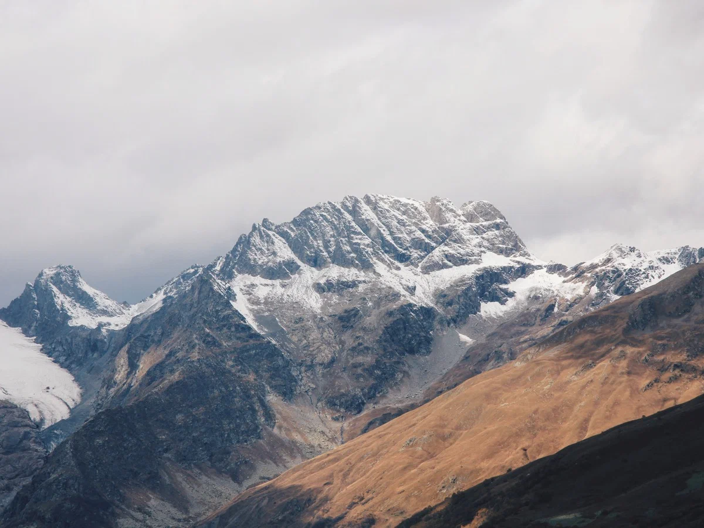
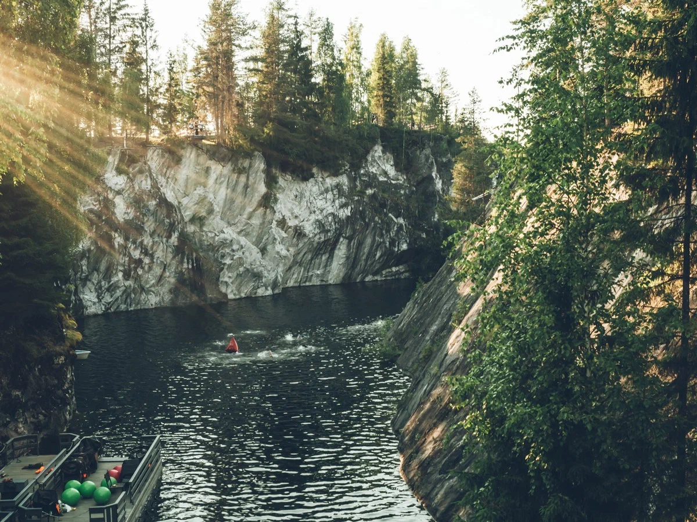

В России такое количество красивых мест, что их хватит на сотни путешествий. Холодные инопланетные камни, прозрачные озёра, пустыни, пещеры, загадочные постройки людей прошлого — в каждом регионе есть что-то впечатляющее. В этой подборке — несколько природных достопримечательностей, которые наверняка запомнятся вам надолго. В эти удивительные красивые места в России вы можете организовать необычное путешествие.
Эльбрус и Большой Кавказ
Вулкан Эльбрус — самая высокая горная вершина России и Европы — 5642 метра. Снежный гигант в окружении гор Большого Кавказа очень красив и привлекает гостей круглый год: с декабря по май работают горнолыжные трассы курортов «Эльбрус» и «Чегет», лето и осень — сезон восхождений и хайкинга. С мая по октябрь из посёлка Терскол в Приэльбрусье доступно много живописных пеших маршрутов, например к водопаду «Девичьи косы». Наверх ведёт грунтовая дорога, по которой предстоит подниматься три-четыре часа.Среди маршрутов посложнее — трек на гору Чегет.Подъём к самому Эльбрусу начинается с поляны Азау — местечка непосредственно у подножия горы, рядом с канатной дорогой. Зимой на склонах Эльбруса проходит катание, а летом по прогулочному билету за 1350 рублей из Азау можно один раз подняться до станции «Гарабаши» — 3847 метров.С Гарабаши в хорошую погоду открывается невероятный вид на обе вершины Эльбруса и горные хребты вокруг. Для желающих перекусить или попить чай работает кафе. На склоне даже летом лежит снег, за отдельную сумму можно прокатиться ещё на километр выше на снегоходе или ратраке. Спуск от Гарабаши обратно в Азау входит в цену прогулочного билета, главное, не забыть о времени: канатная дорога закрывается в 16:00.Как добраться: ближайшие к Приэльбрусью аэропорты — в Нальчике (130 км) и Минеральных Водах (190 км). Трансфер из аэропорта до посёлка Терскол нужно заказывать заранее — информацию можно получить в вашем отеле. Дорога займёт около трех часов.Где остановиться: в Терсколе и других окрестных посёлках есть десятки отелей, а самый необычным вариантом будет ночёвка в приюте LeapRus на высоте 3912 метров, с видом на звёзды и рассветом над облаками.
Горный парк «Рускеала»
Рускеала — бывший мраморный карьер в Карелии и горный парк вокруг него. В парке красиво в любое время, пасмурная погода только подчёркивает суровость северной природы. Карьер — не только природная, но ещё и отчасти культурная достопримечательность: мрамор, добытый здесь, использовали для облицовки самых знаменитых зданий Санкт-Петербурга.Входной билет стоит 450 рублей, но самые интересные активности в эту цену не входят. Например, 2000 рублей стоит популярная часовая экскурсия по заброшенным штольням и пещерам с выходом к большому подземному озеру. Тёплая одежда обязательна: температура под землёй 6–8 градусов, а с потолка капает вода. Расписание и наличие мест в группах нужно уточнять в кассе. Среди других развлечений — полёт над каньоном на троллее, катание на лодке летом и даже дайвинг, как для начинающих, так и для профи. Стоимость — 6000 рублей за погружение. Как добраться: от Санкт-Петербурга до Рускеалы — 290 км, от Петрозаводска — 260 км. Дорога на автомобиле из обоих городов займёт 4–5 часов. Можно доехать до Рускеалы необычным способом — ретропоездом на паровозной тяге из Сортавалы. Из Санкт-Петербурга в Сортавалу в 6:15 утра ходит поезд «Ласточка», расписание ретропоезда состыковано с её графиком, на пересадку отводится 12 минут. Цена билета на ретропоезд — около 900 рублей, и столько же на Ласточку, время в пути — чуть больше часа, вместе с Ласточкой получится 5,5 часов в одну сторону. Маршрут из Москвы подробно описан на сайте РЖД.
Белые скалы на Курилах
Белые скалы находятся на острове Итуруп, крупнейшем из Курильских островов. Они состоят из пемзы и образовались после извержения древнего вулкана. Под воздействием дождей и ветра скалы меняли свою форму и обрели необычный кружевной рельеф. В сочетании с чёрным вулканическим песком и яркой зеленью смотрятся они совершенно инопланетно. Это то место России, которое точно стоит посетить.Помимо скал, на острове немало интересного — несколько действующих вулканов, горячие термальные источники, лавовые плато, бухты, водопады. Так как на Итурупе нет аренды автомобилей, а скалы и другие достопримечательности находятся в труднодоступных местах, комфортнее будет обратиться к местным гидам, которые знают, как лучше организовать трансфер. Как добраться: чтобы попасть на Итуруп, нужно сначала долететь до Южно-Сахалинска — это примерно восемь часов из Москвы — а оттуда летает самолёт авиакомпании «Аврора» в Курильск — время в пути 1 час 15 мин. Есть ещё вариант с теплоходом, но в случае непогоды бывают серьёзные задержки, что может здорово нарушить планы. Важно: Итуруп находится в пограничной зоне, поэтому для посещения острова нужен пропуск. Его можно оформить через Госуслуги в разделе «Получение индивидуального пропуска для въезда лиц и транспортных средств в пограничную зону».